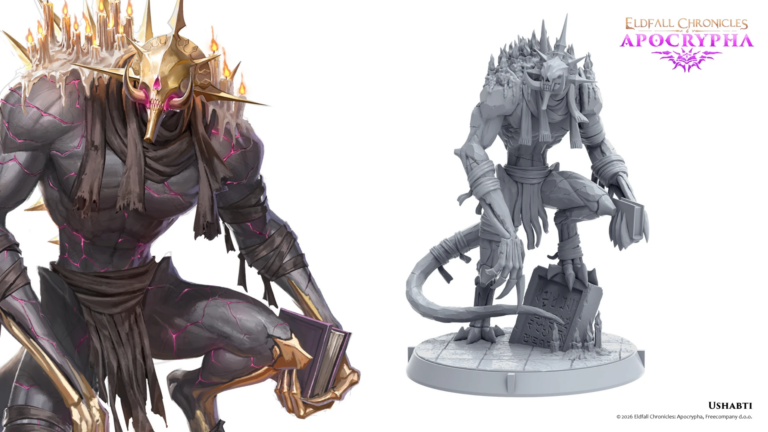
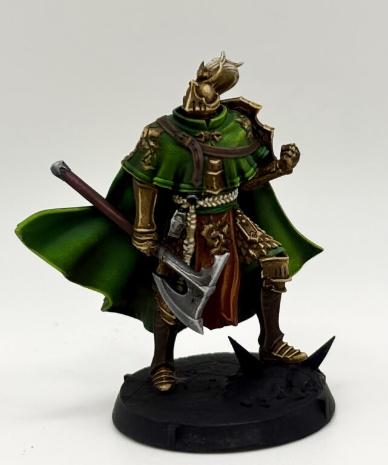
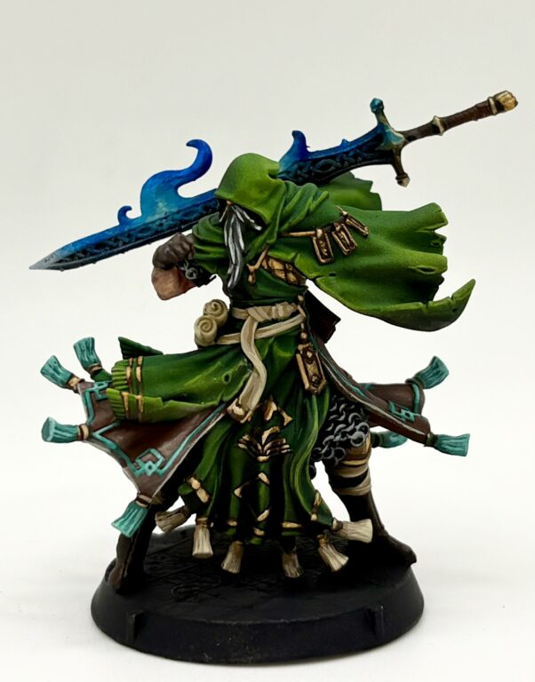
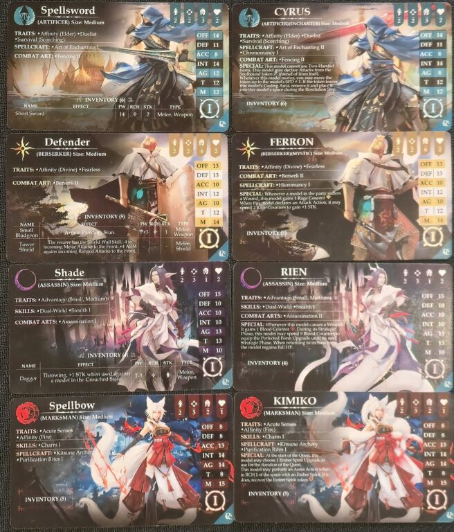

![[Eldfall Chronicles: Apocrypha] Tabletop Battles Interviews Samo Planinc, Freecompany](../assets/img/samples/news-v1-post-img-04.jpg)
[Eldfall Chronicles: Apocrypha] Tabletop Battles Interviews Samo Planinc, Freecompany
This interview has been lightly edited for clarity. A video version of this interview is also available:
Campbell: Hi, I'm Campbell McLaughlin, Tabletop Battles' video producer, and today I'm speaking with Samo Planinc from Freecompany to talk about Eldfall Chronicles: Apocrypha, their new dungeon crawling board game set in the world of Eldfall Chronicles. Samo, would you mind telling us a little about yourself?
Samo: Yeah, of course. My name is Samo. I am the senior or lead developer at Freecompany. I've been with the company now for almost five years working primarily on rules writing, community management, but in such a tiny company as we are, everybody's wearing a lot of hats, so everybody does a little bit of everything, but my primary focus is organized play, rules writing, balancing and all of the mechanical gaming type of stuff.
Campbell: If anyone's looked up stuff about Eldfall Chronicles before, they've probably seen your face in some of the YouTube videos showing how to play and the like.
Samo: Yeah, I am pretty often the face of the company on videos left and right.
Campbell: Including this one I suppose.
Samo: Including this one.
Campbell: I was about to ask you about how the Gamefound campaign for Eldffall Chronicles: Apocrypha was going, but I see it got funded in less than nine minutes, so clearly it's going pretty well.
Samo: It's going beyond our wildest hopes. We funded in 8 minutes and 52 seconds, which is in of itself crazy but the most crazy thing is we beat our grand total from the previous live campaign in five hours. Our previous live campaign I think ended at 267,000 euros. And yesterday at the five hour mark, we were at 270,000, which is beyond words for us. We’re ecstatic with how things are going. We're so grateful for all the support that everybody's shown us. It's a privilege to be able to show and have things that we create be supported so we can show it to the world. So we're eternally grateful.
Campbell: That's incredible. I'm really happy to hear that. That's exciting news for all you guys. We've covered Eldfall Chronicles a bunch on the website and a little bit here on the YouTube channel, but for those not in the know, would you mind giving a brief overview of what Eldfall Chronicles is and how Apocrypha fits into that?
Samo: Yeah, of course. Eldfall Chronicles is a fantasy setting that features two primary game modes that are intercompatible between each other. Our flagship project is our Skirmish war game, which is set in our world of Calad where Eldfall Chronicles happens. It's a high fantasy setting that features extremely fast-paced small model count skirmish battles on the tabletop. Usual parties range between three and five models per side, usual games range about an hour for the player versus player skirmish part of the game But in the same world, with the same system, we also have our dungeon crawling experiences. The first one was Northern Wind which we launched three years ago and it's been a huge success and we are currently on Gamefound with our second dungeon crawling experience, and that is Eldfall Chronicles: Apocrypha, the thing we'll be talking about today. Eldfall Chronicles: Apocrypha specifically is primarily a dungeon crawling experience for one to four players. Everything we do in Eldfall Chronicles is cross-compatible between skirmish and dungeon-crawling systems, and I think we'll talk more about that later anyway.
Campbell: Yeah, we definitely will. So at first glance, this has quite a bit in common with Northern Wind. They're both dungeon crawling cooperative adventures. Would you say Apocrypha is like a sequel to that?
Samo: Yes and no. It is a sequel as in what is happening in Apocrypha is a direct consequence as to what happened in Northern Wind, but also no because you won't have to know anything from Northern Wind in order to be able to enjoy Apocrypha.There might be a few tidbits hidden in Apocrypha for everybody who played through Northern Wind, some information that others will read and go “neat” and people who play through Northern Wind will go “whoa.” We're hoping to get to certain points where we have in our mind a way to combine the two in a bit more integrated way, where people with Northern Wind experience will get a reward for playing through Northern Wind specifically but we'll have to talk about that a little bit later into the campaign, not this early on.
Campbell: Alright, I'm glad there's stuff there to reward people who've maybe been following along with either the story or just the gameplay or what have you. Some members of your team have a background in studying the history, language, culture, and anthropology of Japan, and that really shows, especially in Northern Wind, which has the very Japanese-inspired setting in Mt. Byodo. Apocrypha has a very different setting in the Sand Kingdoms that looks more of a Middle Eastern or Egyptian sort of inspiration. Did that very different setting present a new challenge to you guys? Was it a welcome change of pace from the stuff you've been doing? How did it feel?

One of the incredibly cool Ushabti sculpts and concept art. There's another one that is carrying mummies like duffle bags! Credit: FreecompanySamo: Our art director and chief editor, they're both Japanologists by education. They spent a year in Japan, and are huge fans of Japanese culture. So for Northern Wind we had a huge reservoir of knowledge we could rely on whenever we had to design something new, whenever we had to create settings, find names, create mythology behind the events that are happening. When we were creating Apocrypha, this is a sort of knowledge base that we were lacking. But that doesn't mean that we created Apocrypha without this knowledge. It was actually on us to gain this knowledge. without having to rely on somebody in the team already having it. So it was on all of us in the team to do our research. We all love history. We're all huge history nerds. We've done so many hours of research on different cultures from the North Mediterranean and Arabic world to Middle Eastern to Persian to Egyptian to everything in between. The inspiration and part of research that came from Apocrypha was also our other side project, which is the Royal Game of Ur. Our company did a reimagining of the oldest found board game that was found in Mesopotamia, so we did a modern reinterpretation of the rules for that game as well. And that also pulled a lot of historical research of the area as well into it, so it's another source where we had to pull the knowledge from. So yeah, we did our due, we did a lot of research on this, but we couldn't rely on somebody's previous knowledge as previously. So it was a little bit harder, a little bit more work. but it's what we enjoy.
Campbell: I definitely forgot about The Royal Game of Ur! You folks are definitely putting your money where your mouth is as far as your History enthusiasm goes.
Samo: Yeah.
Campbell: So what are some lessons you've learned from past past projects as far as this one goes, like especially from Northern Wind? Were there any elements from there that you really wanted to bring back? Others that maybe didn't work as well, you just wanted to kind of forget for now? What did you take away from Northern Wind that you brought over to Apocrypha?
Samo: Oh. Oof. So much. Northern Wind was the first proper dungeon crawling game that we made. And of course there are things we could have done better. There are things we had to improve on. There's so many lessons from Northern Wind so I'm just gonna pick a few that stick out in my mind to point them out, mainly for what we liked in Northern Wind and wanted to bring to Apocrypha is; for people who played through the White Path, they will know that there's a sequence of semi-procedurally generating quests in there. I really enjoyed that mechanic and everybody who played through White Path and will play location quests in Apocrypha will see the exact evolution of that system into something that is purpose built for Apocrypha. Taking that experience a step further and creating a variably built experience that will still hit the narrative points and fit into the setting. So that's one that I really enjoyed fleshing out and improving upon. In Apocrypha, as to lessons learned and things that we had to remove or change, I would say that Northern Wind at times had a couple too many layering effects. We underestimated how often different effects in the game layer on top of each other and what is the amount that a player can handle and what is over the edge for that so we were very mindful in Apocrypha. How many times can you layer effects onto the same board, onto the same quest? So we have limited the amount that a player will only encounter as much as they can handle with their mental load.
Campbell: Some good lessons to take away from that one. So one of the things I find really interesting about this game system is how flexible it is. Because you've got Eldfall Chronicles, which is more of a traditional PvP skirmish war game, like you were saying earlier. You know, teams of three to five fighters fighting each other, player versus player, but that system still works as a dungeon crawl on tiles for that dungeon crawling sort of experience. What prompted the team to utilize that single set of rules across both ways of playing instead of creating, say, totally different rule sets?
Samo: We are all board gamers and miniature war gamers at heart. The entire company came out of love of miniature war games in general, and we find that people love interacting with the games where they feel they have multiple uses for their miniatures. Buying a miniature to have it for a single purpose and that is to be shot off the table in round two of a combat is a sad existence for a miniature, especially a miniature you spend hours painting, so we wanted to give players as many ways to utilize their miniatures and experience the world of Calad as we possibly can, because we love that people are playing with our miniatures and people like to play with miniatures in different ways. So the best thing to do is not take miniatures and say here are two completely separate rules packs that you need to learn, but we can make a rules set that fits both worlds. That was the idea behind the cross compatibility between the skirmish and the dungeon crawler. Besides also a little bit of a selfish want of creating an on-ramp for people who never interacted with miniature war games to step into the miniature wargaming realm. It is so easy to have people that never played with miniatures before sit down play through Northern Wind. Then at the end, they'll ask, what's next? And you'll go well, you know the rules and you have the miniatures. Do you want to try the player versus player skirmish game? And it's such a natural progression for people to be brought into the miniature wargaming world as well that we just couldn't resist working on it to make the system in this way.
Campbell: Obviously the skirmish game came first. Was the dungeon crawling mode always an intention to have? Was there always the goal to have a dungeon crawling mode too, or did that come later?
Samo: So, at the very, very start, when Eldfall Chronicles was just an idea in Žiga’s (Žiga Gantar, Freecompany CEO) head, I don't think we had the idea of creating dungeon crawlers but as soon as we created the skirmish game, which was created during the era of COVID where people were locked inside and solo wargaming really started to pop off as a concept. We started thinking that we needed to include a solo play mode into the game, and we did that with behavior cards at the start. As soon as we had those behavior cards, we saw that classical skirmish games with behavior cards are slightly limited in the scope of what you can do because it puts the pressure on the player to create the narrative. So we can write a narrative, but it's going to be very loose. How can you solve this issue is by creating a very dedicated dungeon crawl mode where you're expanding on exactly that aspect. So the idea of dungeon crawlers was born very early into the creation of Eldfall Chronicles. Not at the very beginning, but as soon as we started experiencing the COVID rise of solo wargaming. Dungeon crawlers were just a natural progression from what we envisioned.

Eldfall Apocrypha- painted by Blake LawCampbell: Just from an outsider's perspective, the sort of JRPG aesthetics of the whole game really do feel at home with the dungeon crawling experience.
Samo: Yeah.
Campbell: Since the skirmish mode came first, did any of the dungeon crawl design feel constrained at some point during development?
Samo: Yes and no. Building systems within constraints can be restricting sometimes but can sometimes also be liberating because you have a bunch of problems already solved, and you know that you need to build the rest to fit the mold. So with the dungeon crawler using the skirmish rules, it was more of a question of how do we need to adjust this framework to fit a purely cooperative experience, because that is the main difference. We are porting the experience of player versus player where you have a mind opposite you to an experience that is purely for people trying to outsmart the game. That was basically the only thing that we needed to really adjust when creating dungeon crawling rules and making things simpler with the tile system instead of inches. I wouldn't say it felt very constricting building it because in the end it's a framework that you can always change and correct when you need it to and we did when it came to the modifications for cooperative play.
Campbell: When you're creating units for Apocrypha how much focus is given to how they'll function in the standard skirmish mode? Like how often are designs revisited to make tweaks for skirmish?
Samo: Anyone that saw Northern Wind; both monster profiles and Northern Wind models, there are respective skirmish profiles. Then in the skirmish game the designs are similar but completely apart. Whenever we're creating dungeon crawling profiles, we are for skirmish thinking only in broad strokes. So what are going to be the roles of this model in the skirmish game and do the mechanics, the feel, the modus operandi of the model on the table, will it be able to translate onto the skirmish table? So those are the things we think when we are making the dungeon crawler models. After that we're just taking the broad strokes and doing it from the ground up, using those broad strokes for the skirmish. Because skirmish is very delicately balanced, we need to be able to adjust numbers left and right in order to create that balanced experience within skirmish. So the the two designs are touching only in “What do I want to present on the table with this model? How do I want the player to feel when they're playing this model?” The rest is completely separate because numbers are so different between the two systems.
Campbell: That makes sense, but you still have that thematic and narrative connection between the two ways to play. This next question is a pretty nitty-gritty one coming from my colleague Jake (Jake Bennington). Northern Wind released with an optional set of rules for a determining line of sight using these indicators in the tiles instead of going by a model by model basis. What was the reasoning in making part of the rules have options like assisted line of sight compared to true line of sight?
Samo: So the options we give within rules is usually where we couldn't agree what the players are gonna like the most. When we encounter such a situation within the rules, we just leave it open and give players the choice. With the release of Northern Wind, we realized that people prefer assisted to true line of sight and that became the default mode for Apocrypha, because that was voted by the players or the feedback from the players told us that. But in development and of Northern Wind, we couldn't really decide. which of the options people prefer. And besides, I think it's a nice touch when war games in general, not just dungeon crawlers, give you options of asking you how do you want to play this. “Look we have this in this option and whichever you prefer you can play that.” The game will function in any of these modes. We have different modes of pre-measuring for skirmish, let's say you can have the game with full pre-measuring, limited pre-measuring, or no pre-measuring. And all three options are supported by the rules. I think it's nice to let people play with the miniatures that they bought in a way that they wish and we try to give those options to people in in rules as well besides just gameplay options
Campbell: That's one of those strengths of tabletop games as opposed to video games is that you can kind of make it your own. No one's there to stop you.
Samo: Exactly, yeah
Campbell: So what are some of the inspirations for creating this dungeon and crawl format in general, and then for Apocrypha in particular?
Samo: There is many, but mainly it was our frustration with dungeon crawlers that none of them really hit what we wanted to hit. I feel dungeon crawlers often involve too many role-playing elements that cannot then be very well fleshed out in a predetermined scenario, set of books, set of events. I also feel that dungeon crawlers often create repetitive situations on the table when playing certain scenarios where you're wading through numbers and numbers of the same types of enemies, slaughtering the same rat mobs a thousand times and a hundred times in a single scenario. Those were all things that I found not that fun for me personally. And it was as often does, frustration with things that I love, that they could be better, that brought us to this. We created something where we utilize those frustrations to actually do something about it and create a game that approaches this differently. That's why both Northern Wind and Apocrypha have a pretty linear storyline, but that storyline can go so much deeper and you can have an impact on that storyline because we have limited options, but within those limited options you can really change up what is happening. Same with our combat system, because we're porting a skirmish war game combat system into a dungeon crawler we have so much more depth to create interesting scenarios, tactical scenarios that players need to think about and how to solve which also gives us that tactical depth you don't really often find in dungeon crawlers.

Eldfall Apocrypha- Blake LawCampbell: One thing I've noticed while looking the models in the campaign is that, yeah, unlike a lot of other dungeon crawlers, you don't have a set of just, “Here's the box of 10 skeletons. Here's a box of 10 goblins.” They are a lot of unique, named enemies that aren't just Skeleton Mob number 357, which I think is one of the strengths of your whole game's aesthetic and the whole game’s experience. That seems like kind of a good on-ramp to talk about the art and the models here because I think they knocked out of the park. They look cool as hell. Cyrus the one-armed wizard swordsman is one of the coolest takes on the whole “one-armed swordsman” idea I think I've ever seen.
Samo: I'm really glad to hear it.
Campbell: But I think the monsters in the set also look absolutely awesome. Which model in the set is your favorite?
Samo: My favorite must be the Mimics. I love the underdog. It's a common Slovenian trait. because we so often in history were the underdog. All Slovenians love all underdogs, so Mimics are my favorite. But out of the heroes, Cyrus is also very near and dear to my heart.
Campbell: Would you say he's your favorite guy to play as, or is there someone else you like playing as more?
Samo: Cyrus and Kimiko I think have the most interesting gameplay pattern to me personally, but that's because I love positioning and they're both a lot about positioning more than the other two characters in the game. Cyrus is aesthetically and mechanically very very near to my play style and my preferences.

The four heroes of Apocrypha. On the left are their younger forms that you control during a prologue/tutorial, then after 20 years of game time you pick them up again on the right. Credit: Jake BenningtonCampbell: One thing I also noticed while looking through here is that you have little cardboard standees for the characters as well, and for the tutorial you're playing younger versions of the characters. What led you to arrive at that decision?
Samo: So I don't know how much you read about the story from the tutorial but the tutorial is actually happening 17 years before the events of the actual campaign. And 17 years in an adventurer's life is a long, long time. That means that the heroes 17 years ago weren't really heroes. If they are heroes now they had to do that progression through the 17 years in between to actually earn their titles, become really powerful on their own. That's the story part of it. But there is also another part of it that really neatly fits into the puzzle, and that is each of the heroes was made very unique and powerful from the get-go with a lot of abilities and special effects that they can do. But that is not a good way to teach people how to play the game, by throwing a huge amount of keywords at their face, and we had the perfect excuse to make simplified younger versions of the heroes with less rules with only the basics where you can learn the game, which makes perfect story sense and makes perfect gameplay sense.
Campbell: That's a very cool blending of narrative and mechanics. When I was finding out a bit more about this, that caught my eye. It’s just a clever and kind of cute thing to add in there, I like that quite a bit. So are there any other bits of game design that you're particularly proud of, either in Apocrypha or Eldfall Chronicles in general? This is very specifically your time where you can just brag about the cool things you've done.
Samo: I am extremely, extremely proud of the location quests that we did for Apocrypha. Every single interview I'm talking about location quests, but they're really so cool. There's three different aspects that combine together into a single location quest and the core game comes with 15 of each. So 15 times 15 times 15 is a lot of options, and they all fit into the narrative, they all fit into the setting. So I'm really happy with how those turned out specifically for Apocrypha. In general, I think I am very, very proud of the latest set of competitive quests that we did for our competitive season two. For the skirmish part we released four new quests that we did for the new season and I'm really happy how those are turning out. The Ink Snail Chase is turning out to be a home run and a fan favorite, if nothing else because it gives players excuses to print more snail miniatures.
Campbell: Well Samo, before we wrap up for the day, where can people find out more about Eldfall Chronicles: Apocrypha and what would you like to point them towards as we close up here?
Samo: Yep. So currently we are still live on Gamefound, so the best way to follow us is at our page, Eldfall Chronicles: Apocrypha on Gamefound. Otherwise we have our webpage and a Discord server. The Discord server is filled to the brim with an enthusiastic community where you can ask questions, find people to play against, play with people online. share your painted miniatures, find inspiration and so much more so our webpage and our Discord server would be the best ways to discover Eldfall in general, while Gamefound for Apocrypha in particular.
Campbell: Awesome. And we'll be covering that more on the website for sure. Well, Samo, it has been delightful.
Samo: Perfect.
Campbell: Thank you so much for taking the time to talk with me about Apocrypha and just the greater world of Eldfall Chronicles y 'all have been building over there.
Samo: It's been an absolute pleasure. Thank you for having me.
Have any questions or feedback? Drop us a note in the comments below or email us at contact@goonhammer.com. Want articles like this linked in your inbox every Monday morning? Sign up for our newsletter. And don’t forget that you can support us on Patreon for backer rewards like early video content, Administratum access, an ad-free experience on our website and more.Originally published on Goonhammer.


Leave a Comment